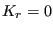
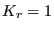
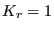
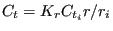
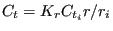
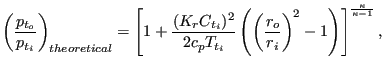
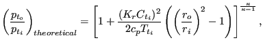
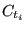
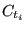

This is a straight pipe with constant section and head losses
 defined by the
Manning formula:
defined by the
Manning formula:
|  | (124) |
where n is the Manning coefficient (unit:
time length),
length),  is the mass flux, L is the length of the
pipe,
is the mass flux, L is the length of the
pipe,  is the liquid density, A is the cross section of the pipe
and
 is the hydraulic radius defined by the area of the cross
section divided by its circumference (for a circle the hydraulic radius is one
fourth of the diameter). The following constants have to be specified on the
line beneath the *FLUID SECTION, TYPE=PIPE MANNING card:
is the liquid density, A is the cross section of the pipe
and
 is the hydraulic radius defined by the area of the cross
section divided by its circumference (for a circle the hydraulic radius is one
fourth of the diameter). The following constants have to be specified on the
line beneath the *FLUID SECTION, TYPE=PIPE MANNING card:
The length of the pipe is determined from the coordinates of its end
nodes. Typical values for  are
 s
are
 s m for steel
pipes and
 s
m for steel
pipes and
 s m for smooth concrete pipes (these
values are for water. Notice that, since the dynamic viscosity does not show
up explicitly in the Manning formula,
m for smooth concrete pipes (these
values are for water. Notice that, since the dynamic viscosity does not show
up explicitly in the Manning formula,  may be a function of the viscosity).
may be a function of the viscosity).
By specifying the addition FLEXIBLE in the type label the user can create a flexible pipe. In that case the user specifies two nodes, the distance between them being the radius of the pipe. These nodes have to be genuine structural nodes and should not belong to the fluid network. The distance is calculated from the location of the nodes at the start of the calculation modified by any displacements affecting the nodes. Consequently, the use of the *COUPLED TEMPERATURE-DISPLACEMENT keyword allows for a coupling of the deformation of the pipe wall with the flow in the pipe. The following constants have to be specified on the line beneath the *FLUID SECTION, TYPE=PIPE MANNING FLEXIBLE card:
Example files: artery1, artery2, centheat1, centheat2, pipe, piperestrictor.